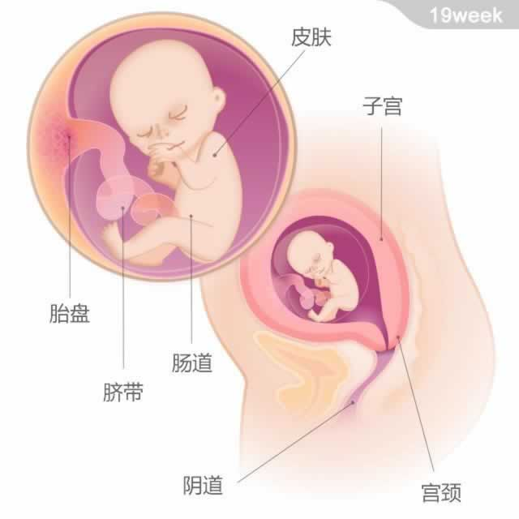

 宝宝有一个哈密瓜大小，重约255克，从头部到臀部的长度为14~16厘米 现在，宝宝的体重继续增加。他会吞咽羊水，吸收其中的水合物和营养，多余的水会进入他的大肠。同时，他开始制造胎粪了。胎粪是黑色黏稠状的物质，由死细胞、消化分泌物和吞咽的羊水组成。胎粪会聚集在宝宝的肠道中，成为他出生后尿布上的第一块“成果”。 本周起，宝宝可以分辨出早晨、下午和晚上了。表现出在每天特定的时刻表现得比其他时候更为活跃，也更乐于和妈妈做互动。